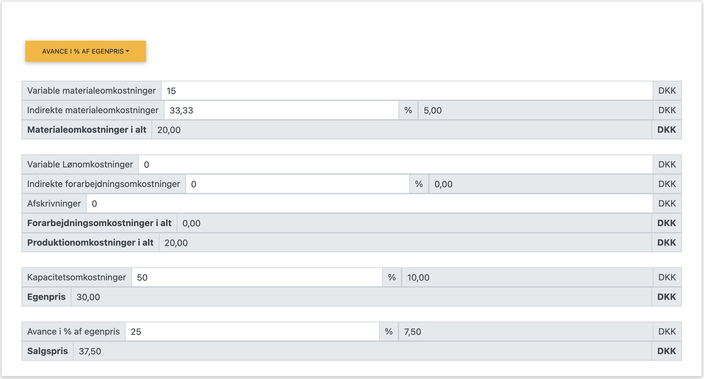

Fordelingskalkulation (Full Cost)
Fordelingskalkulation, også kendt som full cost-kalkulation, er en metode hvor alle omkostninger - både variable og faste - fordeles på produkterne for at finde produktets samlede omkostninger, ofte kaldet egenprisen. Salgsprisen findes derefter ved at tillægge en ønsket avance.
I dette kapitel benytter vi følgende forkortelser/begreber:
- Variable materialeomkostninger: Direkte omkostninger til råvarer, komponenter, emballage mv., der varierer med antal producerede enheder.
- Indirekte materialeomkostninger: Omkostninger til materialer, der ikke direkte kan henføres til det enkelte produkt (fx smøremidler, rengøring), ofte beregnet som en procentsats af de variable materialeomkostninger.
- Materialeomkostninger i alt: Summen af variable og indirekte materialeomkostninger.
- Variable lønomkostninger: Direkte løn til medarbejdere involveret i produktionen, der varierer med antal producerede enheder.
- Indirekte forarbejdningsomkostninger: Andre produktionsrelaterede lønomkostninger, der ikke direkte kan henføres til produktet (fx værkførere, kvalitetskontrol), ofte som en procentsats af de variable lønomkostninger.
- Forarbejdningsomkostninger i alt: Summen af variable og indirekte lønomkostninger.
- Produktionomkostninger i alt: Summen af materialeomkostninger og forarbejdningsomkostninger. Dækker typisk alle variable produktionsomkostninger og kan i nogle modeller inkludere direkte faste omkostninger som afskrivning på maskiner specifikt brugt til dette produkt.
- Kapacitetsomkostninger: Fordeling af virksomhedens øvrige faste omkostninger (også kaldet indirekte faste omkostninger eller overhead), som er nødvendige for driften, men ikke direkte knyttet til produktionen af den enkelte enhed. Dette inkluderer typisk husleje, administration, salg & marketing, afskrivninger på bygninger og generelt udstyr. Beregnes ofte som en procentsats af produktionsomkostningerne.
- Egenpris: Den samlede omkostning pr. enhed (Produktionsomkostninger + Kapacitetsomkostninger).
- Avance: Det beløb eller den procentdel, der lægges oven i egenprisen for at opnå fortjeneste.
- Salgspris: Egenpris plus avance.
- X = Forventet Mængde: Det antal enheder, man forventer at producere, som de faste omkostninger (kapacitetsomkostningerne) fordeles over, hvis ikke en procentsats benyttes.
I dette kapitel fokuserer vi på:
- Hvordan virksomheder kan fordele alle omkostninger for at beregne produktets egenpris
- Beregning af indirekte omkostninger og kapacitetsomkostninger som procentsatser
- Fordele og ulemper ved full cost-princippet
- Et gennemgående beregningseksempel fra en bagerforretning
Grundlæggende principper for fordelingskalkulation
Ved fordelingskalkulation beregnes produktets egenpris ved trinvist at addere omkostningslag:
- Variable materialeomkostninger
- + Indirekte materialeomkostninger (% af var. materialeomk.) = Materialeomkostninger i alt
- Variable lønomkostninger
- + Indirekte forarbejdningsomkostninger (% af var. lønomk.) = Forarbejdningsomkostninger i alt
- = Produktionsomkostninger i alt
- + Kapacitetsomkostninger (% af produktionsomk.) = Egenpris
Salgsprisen beregnes derefter ved at tillægge en avance til egenprisen.
Formler i fordelingskalkulationen:
Produktionsomkostninger = Materialeomkostninger i alt + Forarbejdningsomkostninger i alt
Egenpris = Produktionsomkostninger + Kapacitetsomkostninger
Salgspris = Egenpris × (1 + Avance %)
Bemærk: Indirekte omk. og Kapacitetsomk. beregnes ofte som % af en basisomkostning.
Eksempler på fordelingskalkulation fra virksomheder
| Virksomhed | Produkt | Produktionsomk. (VE) | Kapacitetsomk. (FE) | Avance | Salgspris |
|---|---|---|---|---|---|
| LEGO | Star Wars sæt | 150 kr. (klodser, figurer, tryk) | 100 kr. (design, forme, markedsføring, generelle maskiner etc.) | 50% | 375 kr. |
| Royal Copenhagen | Musselmalet kop | 100 kr. (porcelæn, glasur, løn til malere) | 200 kr. (ovn-afskrivning, design, husleje, administration etc.) | 100% | 600 kr. |
| Novo Nordisk | Insulin pen | 50 kr. (plast, insulin, samling) | 150 kr. (forskning, fabrik-afskrivning, patenter, salgsafdeling etc.) | 200% | 600 kr. |
| B&O | Højtaler | 1.000 kr. (elektronik, kabinet, montage) | 2.000 kr. (udvikling, design, brand, IT-systemer, ledelse etc.) | 150% | 7.500 kr. |
Gennemgående beregningseksempel: Bagerforretning
Lad os se på et konkret eksempel fra en bagerforretning, der skal fastsætte prisen på deres håndlavede croissanter:
Forudsætninger (baseret på app-eksempel):
- Variable materialeomkostninger: 15,00 kr. pr. stk.
- Indirekte materialeomkostninger: 33,33% af variable materialeomkostninger
- Variable lønomkostninger: 0,00 kr. pr. stk. (Antaget i dette eksempel)
- Indirekte forarbejdningsomkostninger: 0% af variable lønomkostninger
- Kapacitetsomkostninger: 50% af produktionsomkostningerne
- Ønsket avance: 25% af egenprisen
 Figur 1: Beregning af fordelingskalkulation i appen, bemærk hvis du får oplyst kapacitetsomkostninger som et beløb, skal du tilpasse procentsatsen for at få det korrekte beløb.
App beregning af fordelingskalkulation
Trin 1: Beregning af Egenpris
1. Materialeomkostninger:
Variable materialeomk. = 15,00 kr.
Indirekte materialeomk. = 15,00 kr. × 33,33% = 5,00 kr.
Materialeomkostninger i alt = 15,00 + 5,00 = 20,00 kr.
2. Forarbejdningsomkostninger:
Variable lønomk. = 0,00 kr.
Indirekte forarbejdningsomk. = 0,00 kr. × 0% = 0,00 kr.
Forarbejdningsomkostninger i alt = 0,00 kr.
3. Produktionsomkostninger:
Produktionsomk. = Materialeomk. + Forarbejdningsomk.
Produktionsomk. = 20,00 + 0,00 = 20,00 kr.
4. Kapacitetsomkostninger:
Kapacitetsomk. = Produktionsomk. × 50%
Kapacitetsomk. = 20,00 kr. × 50% = 10,00 kr.
5. Egenpris:
Egenpris = Produktionsomk. + Kapacitetsomk.
Egenpris = 20,00 + 10,00 = 30,00 kr. pr. stk.
Trin 2: Beregning af salgspris
Salgspris med 25% avancetillæg:
Avance = Egenpris × Avance %
Avance = 30,00 kr. × 25% = 7,50 kr.
Salgspris = Egenpris + Avance
Salgspris = 30,00 + 7,50 = 37,50 kr.
Sammenligning: Fordelingskalkulation vs. Bidragskalkulation
Selvom begge metoder bruges til priskalkulation, har de forskellige formål, styrker og svagheder. Valget af metode afhænger af situationen og beslutningen, der skal træffes.
| Aspekt | Bidragskalkulation | Fordelingskalkulation |
|---|---|---|
| Formål | Find salgspris baseret på variable omk. + ønsket dækningsbidrag. Fokus på kortsigtede beslutninger. | Find salgspris baseret på alle omk. (egenpris) + ønsket avance. Fokus på langsigtet prissætning. |
| Omkostninger inkluderet | Kun variable omkostninger (VE). | Både variable (Produktionsomk.) og faste omkostninger (Kapacitetsomk.). |
| Prisberegning | Salgspris = VE + Dækningsbidrag | Salgspris = Egenpris × (1 + Avance %) (Egenpris = Produktionsomk. + Kapacitetsomk.) |
| Fokus | Dækningsbidrag (DB) og Dækningsgrad (DG). Hvad tjener vi pr. stk. ud over de variable omk.? | Egenpris og Avance. Sikrer alle omkostninger dækkes på lang sigt? |
| Beslutningsgrundlag | God til kortsigtede beslutninger: Accept af ekstra ordre, fastsættelse af minimumspris ved ledig kapacitet, valg mellem produkter. | God til langsigtet prissætning, budgettering, regnskabsmæssig lagervurdering. |
| Fordele | Fleksibel, viser direkte profitabilitet af ekstra salg, god ved svingende aktivitet. | Sikrer dækning af alle omk. på sigt, giver et "fuldt" omkostningsbillede pr. produkt. |
| Ulemper | Ignorerer faste omk., kan føre til for lave priser på lang sigt hvis DB ikke er højt nok. | Stiv, prisen afhænger af forventet volumen, kan give urealistiske priser ved lav volumen, skjuler profitabilitet af ekstra ordrer ved ledig kapacitet. |
| Eksempel: Ekstra ordre | Hvis en kunde tilbyder 25 kr. for en croissant (VE = 15 kr.) og der er ledig kapacitet: Ja, ordren giver 10 kr. i DB. | Bagerens egenpris er 30 kr. Med 25% avance er standardprisen 37,50 kr. Tilbuddet på 25 kr. er under egenprisen og vil umiddelbart blive afvist, selvom det kunne være profitabelt på kort sigt. |
Sammenfatning af kapitlet
Fordelingskalkulation sigter mod at inkludere alle omkostninger i produktets egenpris, men metoden har fordele og ulemper:
Nøgleobservationer:
- Fordele ved fordelingskalkulation:
- Inkluderer alle omkostninger (både variable og faste) i produktets egenpris.
- Giver et grundlag for prissætning med det formål at dække alle virksomhedens omkostninger på lang sigt.
- Kan være nødvendig for regnskabsmæssig værdiansættelse af lagre.
- Ulemper ved fordelingskalkulation:
- Følsom over for ændringer i aktivitetsniveau (fordelingen af faste omkostninger ændres).
- Kan føre til priser, der ikke er konkurrencedygtige, især ved lav kapacitetsudnyttelse.
- Misvisende ved ekstra ordrer (med ledig kapacitet): Metoden inkluderer faste omkostninger i enhedsprisen. Hvis en kunde tilbyder en pris, der er lavere end denne fulde pris, men højere end de variable omkostninger, kan ordren se urentabel ud. Men hvis de faste omkostninger allerede er dækket af den normale produktion, vil den ekstra ordre faktisk bidrage positivt til bundlinjen. Bidragskalkulation fanger dette, da den kun fokuserer på variable omkostninger og dækningsbidrag.
- Anvendelse:
- Egnet til langsigtet prisfastsættelse og ved relativt stabil produktion/afsætning.
- Fordelingen af faste omkostninger kræver et estimat for det normale aktivitetsniveau.
- Prisen er et internt mål, ikke nødvendigvis markedsprisen: Den beregnede salgspris (egenpris + avance) viser, hvad virksomheden bør tage for at dække alle omkostninger og nå sit profitmål. Men kunderne og konkurrenterne bestemmer, hvad der rent faktisk kan tages i markedet. Hvis markedsprisen er lavere, må virksomheden enten acceptere lavere profit eller forsøge at reducere omkostningerne. Den beregnede pris er derfor et vigtigt internt benchmark.
- Suppler med Bidragskalkulation: Fordi fordelingskalkulation er mindre egnet til kortsigtede, fleksible beslutninger, er det ofte en god idé at bruge bidragskalkulation sideløbende. Fx til at vurdere specialtilbud, kampagnepriser eller om en ekstra ordre skal accepteres, når der er ledig kapacitet. Her ser man kun på, om prisen dækker de variable omkostninger og giver et positivt dækningsbidrag.